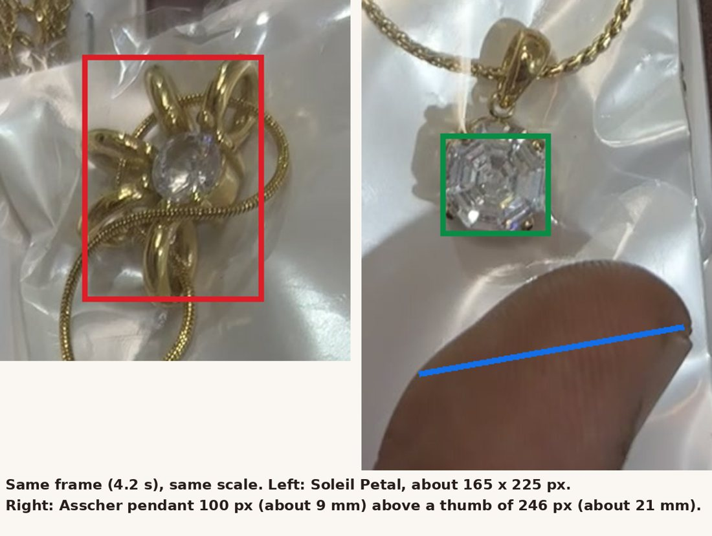

Soleil Petal Pendant
Listing too big- Listing
- about 25 mm across; stone about 7 mm
- Video
- about 15 to 20 mm across; stone about 5 to 6 mm
- Frames
- 4.2 s (beside the Asscher pendant and a thumb), 5.2 s and 6.0 s (held between finger and thumb)
In the same frame and at the same scale, the flower is about twice the Asscher stone, which itself measures about 9 mm against your thumb. Its centre stone is about 0.6 of the Asscher stone. All three frames give 15 to 20 mm.
The worn photos on the listing were sized on 2 Nov to about 31 mm on the neck, so they show it well over one and a half times its real size. The copy, the size card and those photos need redoing.